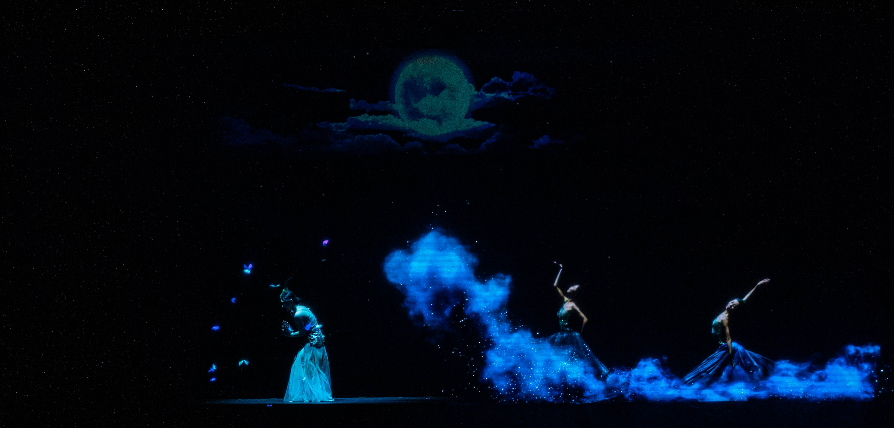
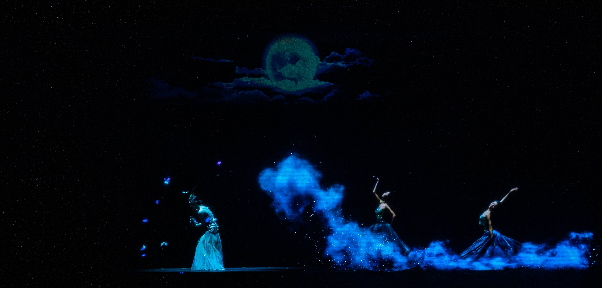
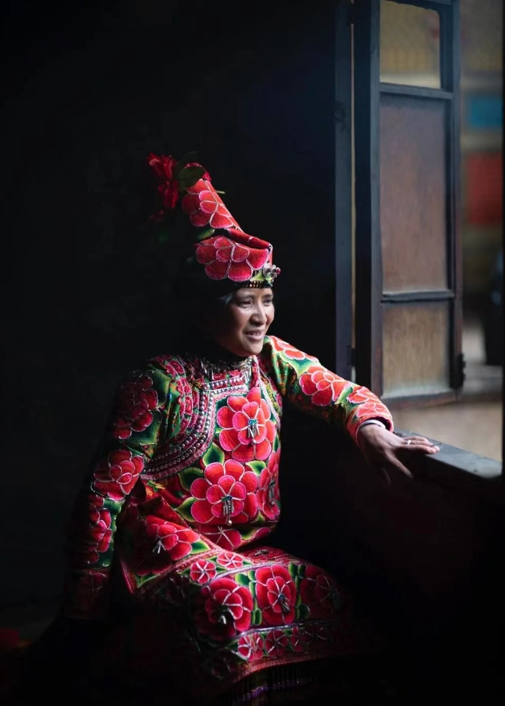
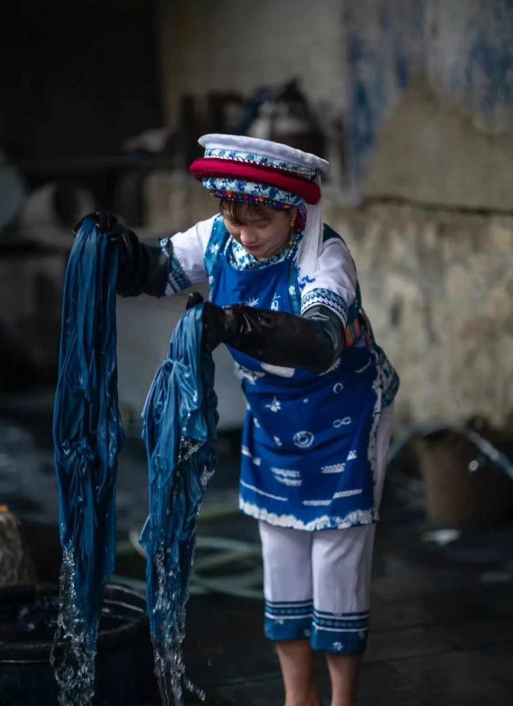
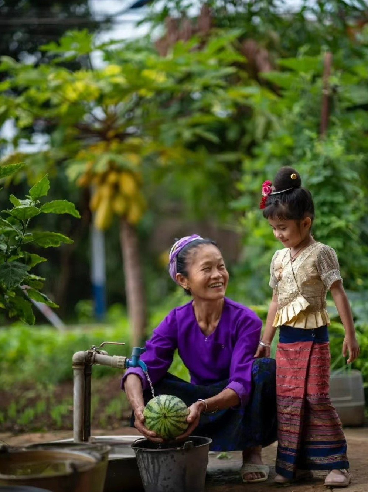
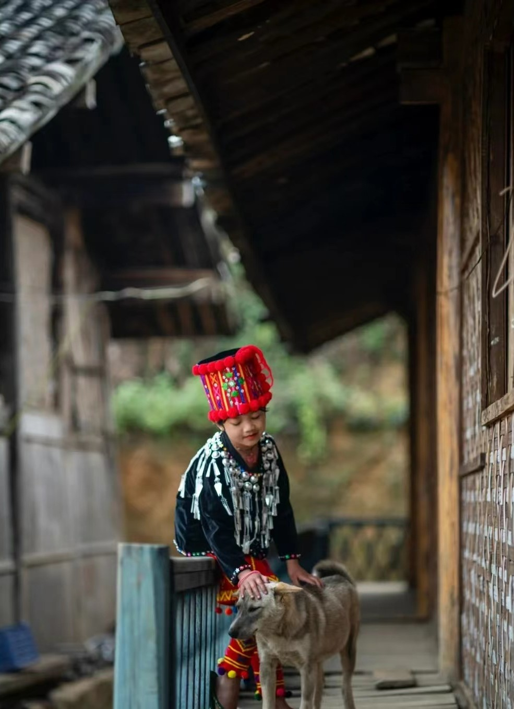
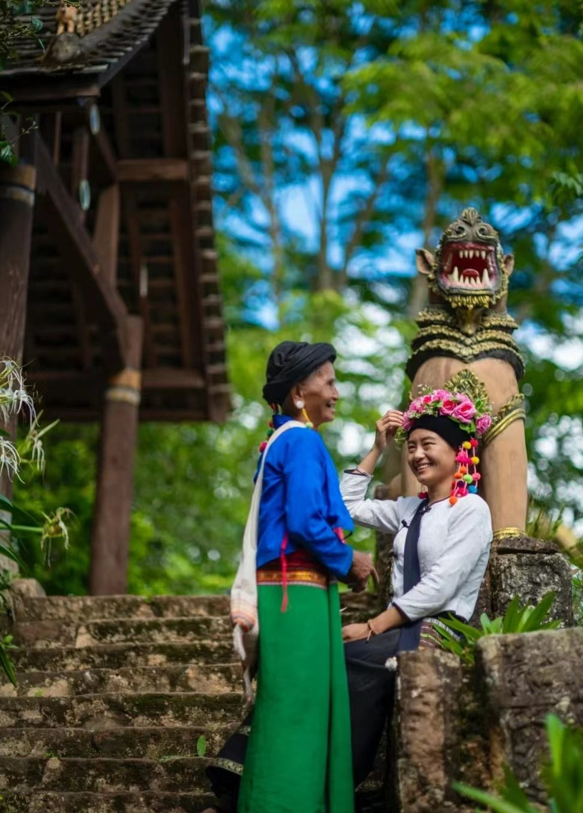
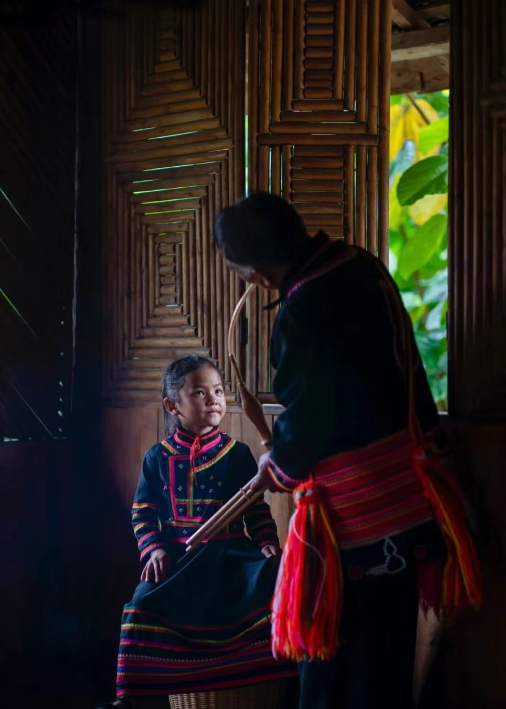
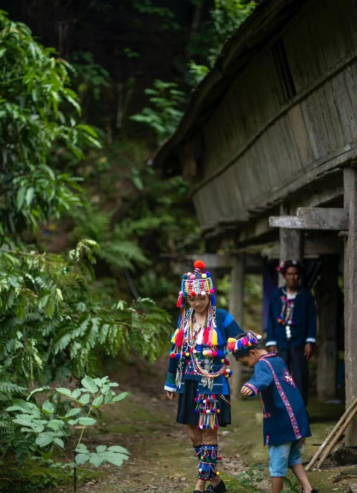
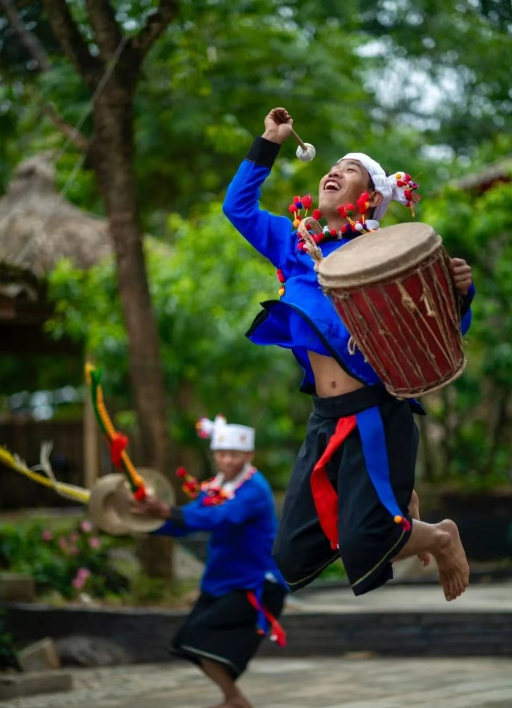

Yunnan Province is home to the largest number of ethnic groups in China,
with 25 ethnic minorities.

Yi nationality
is the sixth largest ethnic minority in China. Its national
language is Yi, which belongs to the Yi branch of Tibeto-Burman language of
Sino-Tibetan family. It has 6 dialects in the north, east, south, southeast,
west and central, including 5 sub-dialects and 25 native languages.
The Yi nationality is mainly distributed in the plateau and coastal hills of
Yunnan, Sichuan, Guizhou and Guangxi provinces (regions), and mainly gathered
in Chuxiong, Honghe, Liangshan, Bijie, Liupanshui and Anshun, etc. Liangshan Yi
Autonomous Prefecture is the largest inhabited area of Yi nationality in China.

The Bai nationality
has its own national language, which belongs to the Yi
language branch of the Tibetan-Burman language family. The Chinese language
has been used by the Bai people since ancient times. The Bai nationality is
unique in art, and its architecture, sculpture and painting art are famous
all over the world. In the process of formation and development, it interacts
with the surrounding ethnic groups and creates a brilliant economy and culture.
Bai nationality is a high degree of settlement, there are Minjia, Lemo, Nama
three branches, deeply influenced by the Han culture.

Dai
(Roman alphabet: Dai), also known as Tai (Thai: Chu Kuai, Roman alphabet: Thai),
Shan (Roman alphabet: Shan), etc., the national language is Dai (Thai), a Sino-Tibetan
Zhuang Dong language family Zhuang Dai language branch.The Dai people regard peacocks
and elephants as mascots, and their folk stories are rich and colorful. The Dai people
like to live by water, and they love to be clean and often take a bath, and women like to
wash their hair, so they have the reputation of "a nation of water". In the past, the Dai
people generally believed in southern Buddhism and primitive religions.

Jingpo nationality
one of the ethnic minorities in China, has its own language
and written language. The language belongs to Tibeto-Burman language family of
Sino-Tibetan family. The five branch languages belong to Jingpo language branch
and Burman language branch, and the written languages are Jingpo and Zaiwa, which
are pinyin characters based on Latin alphabet.
The Jingpo ethnic group is related to the ancient Diqiang people on the Qinghai-Tibet
Plateau. It has five sub-groups: Jingpo, Zaiwa, Lechi, Lang 'e and Pola. It mainly lives
in the mountainous area of Dehong Dai Jingpo Autonomous Prefecture in Yunnan Province,
and a few live in Nujiang Lisu Autonomous Prefecture bordering Kachin State in Myanmar.
Most of the Kachin ethnic groups in Myanmar are also deeply related to the Jingpo and
the Lisu ethnic groups in China.

Bulang
The Bulang people live in the mountainous area, the climate is
mild, abundant rainfall, very conducive to the growth of plants, so, "relying on the mountains
to eat the mountain" is a major feature of the survival of the mountain people. Like other
mountain nationalities, the advantaged geographical environment and abundant natural resources,
especially the vast forest resources, make the Bulang nationality adapt to nature and survive
from nature mainly by collecting, fishing and hunting and slash-and-burn. This way of living
has formed a stable production customs and culture.

Lahu nationality
The Lahu nationality has a long history and rich historical legends.
Legend has it
that the ancestors of the Lahu nationality, who originally lived a hunting life, began
to migrate from north to south in pursuit of a red deer that had wandered into the dense
forests of the south and discovered lush grasslands. Its clothing features both the
nomadic culture of the early north and the farming culture of the modern south, which
also reflects the historical and cultural changes.

Hani
Hani's religious belief is mainly polytheistic worship and ancestor
worship. It is believed that there exist powerful gods of heaven, earth, dragon tree,
and village gods and home gods with the nature of protecting gods between heaven and
earth, and they must be sacrificed regularly to pray for blessing. For all kinds of
ghosts and spirits that bring diseases and disasters to people, they should be restricted
and driven away through sacrifice and witchcraft. The Hani people of Xishuangbanna hold
an annual ritual of "Longba Gate" (walled gate).

De 'ang nationality
The dress of De 'ang nationality has a strong national color,
which reflects the unique aesthetics of the nation and its pursuit of beauty. De 'ang ethnic
men wear blue, black large front jacket and wide and short pants, wrapped in black and white
cloth headscarf, the two ends of the scarf decorated with colorful pompoms. Deang women wear
navy blue or black on the front of the short jacket and long skirt, with black cloth wrapped
head, on the front of the coat inlaid with two red strips of cloth, with four or five pairs
of big square silver buttons, woven colorful horizontal stripes on the long skirt. Young people
of both sexes like to wear silver collars, earmuffs, earrings and other jewelry.
Find us on
Youtube
Contact us
Request a map
Site feedback
Need help?
Help
Terms of use
Privacy Policy
Cookies
Manage privacy settings
Our other sites
Media
The Visual Library
Travel Trade
Business Events